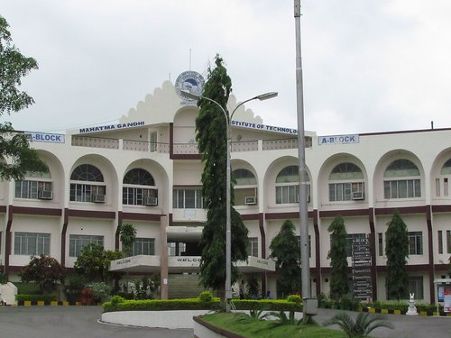

About the College

Mahatma Gandhi Institute of Technology is one of the premier Engineering Colleges in the Self-Financing category in Andhra Pradesh.
MGIT is affiliated to Jawaharlal Nehru Technological University, Hyderabad.
The institute has recently received accredition(Received accredition for 3 years for all 6 Bachelors Programs)status from National Board of Accredition, New Delhi.
The college offers instruction in 8 Undergraduate Programs (Computer Science, Information Technology, Electrical & Electronics, Electronics & Communication,
Mechatronics,Metallurgical & Materials Engineering, Civil Engineering and Mechanical Engineering). Brilliant and Meritorious candidates are seeking admission in MGIT
especially in ECE, EEE, CSE, IT through an annual competitive examnination called EAMCET.
For the last three years, about 75 to 80% of our students provided with jobs through college placements cell.
Many of our alumni have opted to pursue Higher Education Programs and are now well settled in different parts of the world.
The college is known for celebrating NIRVANA,it's annual cultural festival. Annual Literary Magazine Musings,
and each of its constituent departments conducting annual technical symposiums & conferences
A Little History
Mahatma Gandhi Institute of Technology (MGIT) has grown rapidly since its inception in 1997 by the Chaitanya Bharathi Educational Society (CBES) in a serene and
tranquil atmosphere at Gandipet, Hyderabad. with an affiliation to Jawaharlal Nehru Technological University, Hyderabad, Andhra Pradesh. The lush green campus of MGIT
is spread over 30 acres of pleasant landscape with ac constructed area of 2,50,787 Sq fts.
The CBES was established in 1979 by a group of top-notchers who have transcended in their own right. The primary objective of this Educational Society is to create
temples of knowledge so as to impaft value-based education to the present and future generations of our country. The mangement extends support in organizing any fests
or seminars.
MGIT started functioning initially with three branches and an intake of 180 students and has increased to 2020 since. As of now there are eight branches of UG and
four branches of PG Courses
B.Tech
- Computer Science Engineering (CSE)
- Electronics & Communication Engineering (ECE)
- Metallurgical & Materials Engineering (MME)
- Computer Science & Information Technology (IT)
- Electrical & Electronics Engineering (EEE)
- Mechanical( Mechatronics )Engineering (MCT)
- Mechanical Engineering(ME)
- Civil Engineering(CE)
M.Tech
- Computer Networks & Information Security (CN & IS)
- Digital Electronics and Communication Engieering (DE & CE)
- Power Electronics and Electrical Drives (PE & ED)
The primary objective of the institution is to impart value-based education to the present and future generations of our country. The Management works with a vision
to strive for excellence and coordinates all efforts in transforming the institute named after Mahatma.The Management extends their support and advices the student
committees in organizing any Technical,Cultural Festivals & Conferences.
While in the process of achieving the said visions, The institute constantly thrives to maintain the following values:
1.Leadership Qualities
2.Entrepreneurial Capabilites
3.Moral & Ethical Values
4.Academic Excellence
5.Technical Expertise
6.Creative Intelligence